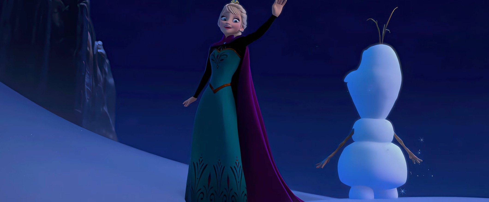

在电影正典和官方青少小说中，雪宝（Olaf）是在童年事故当夜由艾莎和安娜共同创造的。当时姐妹俩在城堡大厅里玩雪——艾莎用魔法造雪，安娜在雪地里欢笑跳跃。艾莎用魔法堆了一个雪人，安娜给它取名为"Olaf"，并给它装上了胡萝卜鼻子和树枝手臂。
这个雪人是姐妹俩童年友谊的象征——它承载着她们最美好的回忆，也象征着她们之间深厚的羁绊。然而，在一次玩耍中，艾莎的魔法意外击中了安娜的头部，导致她昏迷。从那以后，为了保护安娜和隐藏艾莎的魔法，父母决定将姐妹俩隔离——艾莎被关在房间里，安娜则在城堡中孤独地长大。雪宝也被遗忘在城堡的角落里，直到F1中艾莎在冰宫殿里重新用魔法造出了他。
在F1中，当艾莎在冰宫殿里重新造出雪宝时，雪宝立刻认出了安娜，并说"我认识你！"——这暗示雪宝保留了童年的记忆，他是姐妹俩童年友谊的「活的见证」。这种「记忆的延续」让雪宝的角色更加深刻——他不仅是一个可爱的雪人，更是姐妹俩童年友谊的象征和延续。
在《Conceal Don't Feel》（迪士尼Twisted Tale系列，Jen Calonita撰写）中，雪宝的诞生时间被改写了——他不是在童年事故当夜由姐妹共创的，而是在父母死后第三年、艾莎成年后以"爱之记忆"独自造出的。
在这个改写版本中，安娜在婴儿期就被送出城堡，托付给山间小镇 Harmon 的面包师夫妇抚养，艾莎则在城堡中孤独长大。姐妹俩完全不认识彼此，也没有共同的童年记忆。当父母出海遇难后，艾莎成为了阿伦黛尔的女王，但她仍然孤独——她没有朋友，没有家人，只有魔法和恐惧陪伴她。
在父母死后第三年，艾莎在孤独中用魔法造出了雪宝——她以"爱之记忆"为基础，造出了这个可爱的雪人。雪宝虽然是艾莎独自造出的，但他自称"You made me for Anna!"（你是为了安娜而造我的！），并且记忆残缺——他隐约感觉到自己与某个"安娜"有关，但记不清具体的细节。
这个改写版本探索了「如果姐妹俩没有共同的童年记忆，雪宝还会存在吗？」「如果雪宝是艾莎独自造出的，他还会认识安娜吗？」「'爱之记忆'能否跨越时间和空间的隔阂？」等问题，为读者提供了一个全新的视角来理解雪宝的角色和姐妹羁绊的主题。
| 维度 | 正史（童年当夜） | 改写（父母死后第三年） |
|---|---|---|
| 创造者 | 艾莎和安娜共同创造 | 艾莎独自创造 |
| 创造时间 | 童年事故当夜 | 父母死后第三年，艾莎成年后 |
| 创造基础 | 姐妹俩的童年游戏和友谊 | 艾莎的"爱之记忆" |
| 记忆状态 | 保留童年记忆，认出安娜 | 记忆残缺，隐约感觉到与安娜有关 |
| 象征意义 | 姐妹俩童年友谊的「活的见证」 | 艾莎孤独中对「爱」和「连接」的渴望 |
| 性质 | 官方正史 | Twisted Tale 改写，非正史 |
《Conceal Don't Feel》的「父母死后第三年艾莎独造」改写虽然不是正史，但具有重要的探索意义：
第一，深化了「爱之记忆」的主题。在改写版本中，雪宝是艾莎以"爱之记忆"为基础造出的——即使姐妹俩没有共同的童年记忆，艾莎对「爱」和「连接」的渴望仍然创造出了雪宝。这种「爱之记忆的力量」深化了《冰雪奇缘》的核心主题——爱可以跨越时间和空间的隔阂，即使没有共同的记忆，爱仍然存在。
第二，探索了「孤独与创造」的关系。在改写版本中，艾莎在孤独中造出了雪宝——她没有朋友，没有家人，只有魔法和恐惧，但她用魔法创造出了一个「朋友」。这种「孤独中的创造」让读者更深刻地理解了艾莎的性格——她虽然孤独，但她的内心充满了爱和渴望，这种爱和渴望通过魔法转化为了雪宝。
第三，提供了「雪宝角色」的新视角。在正史中，雪宝是姐妹俩童年友谊的象征；而在改写版本中，雪宝是艾莎孤独中对「爱」和「连接」的渴望的化身。这种对比让读者更深刻地理解了雪宝的角色——他不仅是一个可爱的雪人，更是「爱」和「连接」的象征，无论在什么设定下，他都代表着「爱可以战胜孤独和恐惧」的主题。